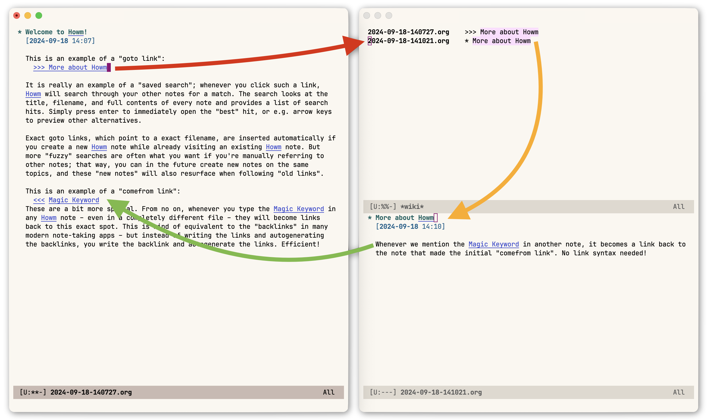

(Colorscheme: Modus themes.)
>>> ~/BabyloniaWave.txt
>>> highway planet
<<< crystal star cluster
in file A,
all strings 'crystal star cluster' in other files are automatically linked to A.
(require 'howm)
(add-to-list 'load-path "/usr/share/emacs/site-lisp/howm/")
(setq howm-view-use-grep t) ;; use external grep
(setq howm-menu-refresh-after-save nil)
(setq howm-menu-expiry-hours 6) ;; cache menu N hours
(setq howm-menu-file "0000-00-00-000000.txt") ;; don't *search*
;; Restore the behavior of "f contents RET" etc. in the list view
;; to how it was in howm-1.5.4 or earlier
(setf (alist-get "contents" howm-view-filter-methods nil nil #'equal)
;; Use the old name intentionally for safety in older versions
'howm-view-filter-by-contents)
(setf (alist-get "Keyword-in-contents" howm-view-filter-methods nil nil #'equal)
'howm-view-filter-by-keyword-in-contents)
(define-key howm-view-summary-mode-map "K" 'howm-keyword-to-kill-ring)
(define-key howm-view-contents-mode-map "K" 'howm-keyword-to-kill-ring)Improvements: